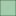

<!doctype html>
<html lang="en">
    <head>
        <meta charset="utf-8">
        <meta http-equiv="X-UA-Compatible" content="IE=edge">
        <meta name="viewport" content="initial-scale=1,user-scalable=no,maximum-scale=1,width=device-width">
        <meta name="mobile-web-app-capable" content="yes">
        <meta name="apple-mobile-web-app-capable" content="yes">
        <link rel="stylesheet" href="css/leaflet.css">
        <link rel="stylesheet" href="css/L.Control.Layers.Tree.css">
        <link rel="stylesheet" href="css/qgis2web.css">
        <link rel="stylesheet" href="css/fontawesome-all.min.css">
        <link rel="stylesheet" href="css/leaflet-search.css">
        <link rel="stylesheet" href="css/leaflet-measure.css">
        <style>
        html, body, #map {
            width: 100%;
            height: 100%;
            padding: 0;
            margin: 0;
        }
        </style>
        <title>Etangs de Sologne</title>
    </head>
    <body>
        <div id="map">
        </div>
        <script src="js/qgis2web_expressions.js"></script>
        <script src="js/leaflet.js"></script>
        <script src="js/L.Control.Layers.Tree.min.js"></script>
        <script src="js/leaflet.rotatedMarker.js"></script>
        <script src="js/leaflet.pattern.js"></script>
        <script src="js/leaflet-hash.js"></script>
        <script src="js/Autolinker.min.js"></script>
        <script src="js/rbush.min.js"></script>
        <script src="js/labelgun.min.js"></script>
        <script src="js/labels.js"></script>
        <script src="js/leaflet-measure.js"></script>
        <script src="js/leaflet-search.js"></script>
        <script src="data/Fort_0.js"></script>
        <script src="data/Commune_1.js"></script>
        <script src="data/Etang_2.js"></script>
        <script>
        var map = L.map('map', {
            zoomControl:false, maxZoom:28, minZoom:1
        }).fitBounds([[47.117200265543374,1.2077295283753586],[47.943997134880846,2.6443096762112415]]);
        var hash = new L.Hash(map);
        map.attributionControl.setPrefix('<a href="https://github.com/tomchadwin/qgis2web" target="_blank">qgis2web</a> &middot; <a href="https://leafletjs.com" title="A JS library for interactive maps">Leaflet</a> &middot; <a href="https://qgis.org">QGIS</a>');
        var autolinker = new Autolinker({truncate: {length: 30, location: 'smart'}});
        // remove popup's row if "visible-with-data"
        function removeEmptyRowsFromPopupContent(content, feature) {
         var tempDiv = document.createElement('div');
         tempDiv.innerHTML = content;
         var rows = tempDiv.querySelectorAll('tr');
         for (var i = 0; i < rows.length; i++) {
             var td = rows[i].querySelector('td.visible-with-data');
             var key = td ? td.id : '';
             if (td && td.classList.contains('visible-with-data') && feature.properties[key] == null) {
                 rows[i].parentNode.removeChild(rows[i]);
             }
         }
         return tempDiv.innerHTML;
        }
        // add class to format popup if it contains media
		function addClassToPopupIfMedia(content, popup) {
			var tempDiv = document.createElement('div');
			tempDiv.innerHTML = content;
			if (tempDiv.querySelector('td img')) {
				popup._contentNode.classList.add('media');
					// Delay to force the redraw
					setTimeout(function() {
						popup.update();
					}, 10);
			} else {
				popup._contentNode.classList.remove('media');
			}
		}
        var title = new L.Control({'position':'topleft'});
        title.onAdd = function (map) {
            this._div = L.DomUtil.create('div', 'info');
            this.update();
            return this._div;
        };
        title.update = function () {
            this._div.innerHTML = '<h2>Etangs de Sologne</h2>';
        };
        title.addTo(map);
        var abstract = new L.Control({'position':'bottomleft'});
        abstract.onAdd = function (map) {
            this._div = L.DomUtil.create('div',
            'leaflet-control abstract');
            this._div.id = 'abstract'

                abstract.show();
                return this._div;
            };
            abstract.show = function () {
                this._div.classList.remove("abstract");
                this._div.classList.add("abstractUncollapsed");
                this._div.innerHTML = 'Visualisation des 2744 étangs répertoriés dans la BD TOPO dans le périmètre des communes ayant tout ou une partie de leur territoire en sologne (arrêté du 17 septembre 1941).<br /><br />La surface des étangs est donnée en hectares.';
        };
        abstract.addTo(map);
        var zoomControl = L.control.zoom({
            position: 'topleft'
        }).addTo(map);
        var measureControl = new L.Control.Measure({
            position: 'topleft',
            primaryLengthUnit: 'meters',
            secondaryLengthUnit: 'kilometers',
            primaryAreaUnit: 'sqmeters',
            secondaryAreaUnit: 'hectares'
        });
        measureControl.addTo(map);
        document.getElementsByClassName('leaflet-control-measure-toggle')[0].innerHTML = '';
        document.getElementsByClassName('leaflet-control-measure-toggle')[0].className += ' fas fa-ruler';
        var bounds_group = new L.featureGroup([]);
        function setBounds() {
        }
        function pop_Fort_0(feature, layer) {
            var popupContent = '<table>\
                    <tr>\
                        <td colspan="2">' + (feature.properties['ID'] !== null ? autolinker.link(feature.properties['ID'].toLocaleString()) : '') + '</td>\
                    </tr>\
                    <tr>\
                        <td colspan="2">' + (feature.properties['CODE_12'] !== null ? autolinker.link(feature.properties['CODE_12'].toLocaleString()) : '') + '</td>\
                    </tr>\
                    <tr>\
                        <td colspan="2">' + (feature.properties['AREA_HA'] !== null ? autolinker.link(feature.properties['AREA_HA'].toLocaleString()) : '') + '</td>\
                    </tr>\
                    <tr>\
                        <td colspan="2">' + (feature.properties['ID_2'] !== null ? autolinker.link(feature.properties['ID_2'].toLocaleString()) : '') + '</td>\
                    </tr>\
                    <tr>\
                        <td colspan="2">' + (feature.properties['NOM'] !== null ? autolinker.link(feature.properties['NOM'].toLocaleString()) : '') + '</td>\
                    </tr>\
                    <tr>\
                        <td colspan="2">' + (feature.properties['NOM_M'] !== null ? autolinker.link(feature.properties['NOM_M'].toLocaleString()) : '') + '</td>\
                    </tr>\
                    <tr>\
                        <td colspan="2">' + (feature.properties['INSEE_COM'] !== null ? autolinker.link(feature.properties['INSEE_COM'].toLocaleString()) : '') + '</td>\
                    </tr>\
                    <tr>\
                        <td colspan="2">' + (feature.properties['STATUT'] !== null ? autolinker.link(feature.properties['STATUT'].toLocaleString()) : '') + '</td>\
                    </tr>\
                    <tr>\
                        <td colspan="2">' + (feature.properties['POPULATION'] !== null ? autolinker.link(feature.properties['POPULATION'].toLocaleString()) : '') + '</td>\
                    </tr>\
                    <tr>\
                        <td colspan="2">' + (feature.properties['INSEE_CAN'] !== null ? autolinker.link(feature.properties['INSEE_CAN'].toLocaleString()) : '') + '</td>\
                    </tr>\
                    <tr>\
                        <td colspan="2">' + (feature.properties['INSEE_ARR'] !== null ? autolinker.link(feature.properties['INSEE_ARR'].toLocaleString()) : '') + '</td>\
                    </tr>\
                    <tr>\
                        <td colspan="2">' + (feature.properties['INSEE_DEP'] !== null ? autolinker.link(feature.properties['INSEE_DEP'].toLocaleString()) : '') + '</td>\
                    </tr>\
                    <tr>\
                        <td colspan="2">' + (feature.properties['INSEE_REG'] !== null ? autolinker.link(feature.properties['INSEE_REG'].toLocaleString()) : '') + '</td>\
                    </tr>\
                    <tr>\
                        <td colspan="2">' + (feature.properties['SIREN_EPCI'] !== null ? autolinker.link(feature.properties['SIREN_EPCI'].toLocaleString()) : '') + '</td>\
                    </tr>\
                </table>';
            var content = removeEmptyRowsFromPopupContent(popupContent, feature);
			layer.on('popupopen', function(e) {
				addClassToPopupIfMedia(content, e.popup);
			});
			layer.bindPopup(content, { maxHeight: 400 });
        }

        function style_Fort_0_0() {
            return {
                pane: 'pane_Fort_0',
                opacity: 1,
                color: 'rgba(48,71,53,1.0)',
                dashArray: '',
                lineCap: 'butt',
                lineJoin: 'miter',
                weight: 1.0, 
                fill: true,
                fillOpacity: 1,
                fillColor: 'rgba(163,204,172,1.0)',
                interactive: false,
            }
        }
        map.createPane('pane_Fort_0');
        map.getPane('pane_Fort_0').style.zIndex = 400;
        map.getPane('pane_Fort_0').style['mix-blend-mode'] = 'normal';
        var layer_Fort_0 = new L.geoJson(json_Fort_0, {
            attribution: '',
            interactive: false,
            dataVar: 'json_Fort_0',
            layerName: 'layer_Fort_0',
            pane: 'pane_Fort_0',
            onEachFeature: pop_Fort_0,
            style: style_Fort_0_0,
        });
        bounds_group.addLayer(layer_Fort_0);
        map.addLayer(layer_Fort_0);
        function pop_Commune_1(feature, layer) {
            var popupContent = '<table>\
                    <tr>\
                        <th scope="row">NOM</th>\
                        <td>' + (feature.properties['NOM'] !== null ? autolinker.link(feature.properties['NOM'].toLocaleString()) : '') + '</td>\
                    </tr>\
                    <tr>\
                        <th scope="row">POPULATION</th>\
                        <td>' + (feature.properties['POPULATION'] !== null ? autolinker.link(feature.properties['POPULATION'].toLocaleString()) : '') + '</td>\
                    </tr>\
                </table>';
            var content = removeEmptyRowsFromPopupContent(popupContent, feature);
			layer.on('popupopen', function(e) {
				addClassToPopupIfMedia(content, e.popup);
			});
			layer.bindPopup(content, { maxHeight: 400 });
        }

        function style_Commune_1_0() {
            return {
                pane: 'pane_Commune_1',
                opacity: 1,
                color: 'rgba(35,35,35,1.0)',
                dashArray: '',
                lineCap: 'butt',
                lineJoin: 'miter',
                weight: 1, 
                fillOpacity: 0,
                interactive: true,
            }
        }
        map.createPane('pane_Commune_1');
        map.getPane('pane_Commune_1').style.zIndex = 401;
        map.getPane('pane_Commune_1').style['mix-blend-mode'] = 'normal';
        var layer_Commune_1 = new L.geoJson(json_Commune_1, {
            attribution: '',
            interactive: true,
            dataVar: 'json_Commune_1',
            layerName: 'layer_Commune_1',
            pane: 'pane_Commune_1',
            onEachFeature: pop_Commune_1,
            style: style_Commune_1_0,
        });
        bounds_group.addLayer(layer_Commune_1);
        map.addLayer(layer_Commune_1);
        function pop_Etang_2(feature, layer) {
            var popupContent = '<table>\
                    <tr>\
                        <th scope="row">TOPONYME</th>\
                        <td>' + (feature.properties['TOPONYME'] !== null ? autolinker.link(feature.properties['TOPONYME'].toLocaleString()) : '') + '</td>\
                    </tr>\
                    <tr>\
                        <th scope="row">SURFACE</th>\
                        <td>' + (feature.properties['SURFACE'] !== null ? autolinker.link(feature.properties['SURFACE'].toLocaleString()) : '') + '</td>\
                    </tr>\
                </table>';
            var content = removeEmptyRowsFromPopupContent(popupContent, feature);
			layer.on('popupopen', function(e) {
				addClassToPopupIfMedia(content, e.popup);
			});
			layer.bindPopup(content, { maxHeight: 400 });
        }

        function style_Etang_2_0() {
            return {
                pane: 'pane_Etang_2',
                opacity: 1,
                color: 'rgba(13,58,91,1.0)',
                dashArray: '',
                lineCap: 'butt',
                lineJoin: 'miter',
                weight: 1.0, 
                fill: true,
                fillOpacity: 1,
                fillColor: 'rgba(78,137,180,1.0)',
                interactive: true,
            }
        }
        map.createPane('pane_Etang_2');
        map.getPane('pane_Etang_2').style.zIndex = 402;
        map.getPane('pane_Etang_2').style['mix-blend-mode'] = 'normal';
        var layer_Etang_2 = new L.geoJson(json_Etang_2, {
            attribution: '',
            interactive: true,
            dataVar: 'json_Etang_2',
            layerName: 'layer_Etang_2',
            pane: 'pane_Etang_2',
            onEachFeature: pop_Etang_2,
            style: style_Etang_2_0,
        });
        bounds_group.addLayer(layer_Etang_2);
        map.addLayer(layer_Etang_2);
        var baseMaps = {};
        var overlaysTree = [
            {label: ' Etang', layer: layer_Etang_2},
            {label: ' Commune', layer: layer_Commune_1},
            {label: ' Forêt', layer: layer_Fort_0},]
        var lay = L.control.layers.tree(null, overlaysTree,{
            //namedToggle: true,
            //selectorBack: false,
            //closedSymbol: '&#8862; &#x1f5c0;',
            //openedSymbol: '&#8863; &#x1f5c1;',
            //collapseAll: 'Collapse all',
            //expandAll: 'Expand all',
            collapsed: true,
        });
        lay.addTo(map);
        map.on("zoomend", function(){

                if (map.hasLayer(layer_Commune_1)) {
                    if (map.getZoom() <= 12 && map.getZoom() >= 19) {
                        layer_Commune_1.eachLayer(function (layer) {
                            layer.openTooltip();
                        });
                    } else {
                        layer_Commune_1.eachLayer(function (layer) {
                            layer.closeTooltip();
                        });
                    }
                }
        });
        setBounds();
        var i = 0;
        layer_Commune_1.eachLayer(function(layer) {
            var context = {
                feature: layer.feature,
                variables: {}
            };
            layer.bindTooltip((layer.feature.properties['NOM'] !== null?String('<div style="color: #000000; font-size: 12pt; font-weight: bold; font-family: \'Amatic SC\', sans-serif;">' + layer.feature.properties['NOM']) + '</div>':''), {permanent: true, offset: [-0, -16], className: 'css_Commune_1'});
            labels.push(layer);
            totalMarkers += 1;
              layer.added = true;
              addLabel(layer, i);
              i++;
        });
                if (map.hasLayer(layer_Commune_1)) {
                    if (map.getZoom() <= 12 && map.getZoom() >= 19) {
                        layer_Commune_1.eachLayer(function (layer) {
                            layer.openTooltip();
                        });
                    } else {
                        layer_Commune_1.eachLayer(function (layer) {
                            layer.closeTooltip();
                        });
                    }
                }
        map.addControl(new L.Control.Search({
            layer: layer_Etang_2,
            initial: false,
            hideMarkerOnCollapse: true,
            propertyName: 'TOPONYME'}));
        document.getElementsByClassName('search-button')[0].className +=
         ' fa fa-binoculars';
        resetLabels([layer_Commune_1]);
        map.on("zoomend", function(){
            resetLabels([layer_Commune_1]);
        });
        map.on("layeradd", function(){
            resetLabels([layer_Commune_1]);
        });
        map.on("layerremove", function(){
            resetLabels([layer_Commune_1]);
        });
        </script>
    </body>
</html>
